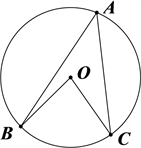
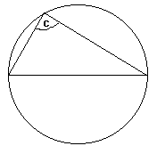
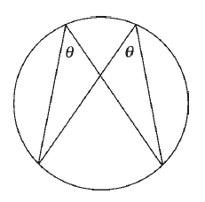
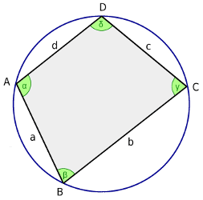
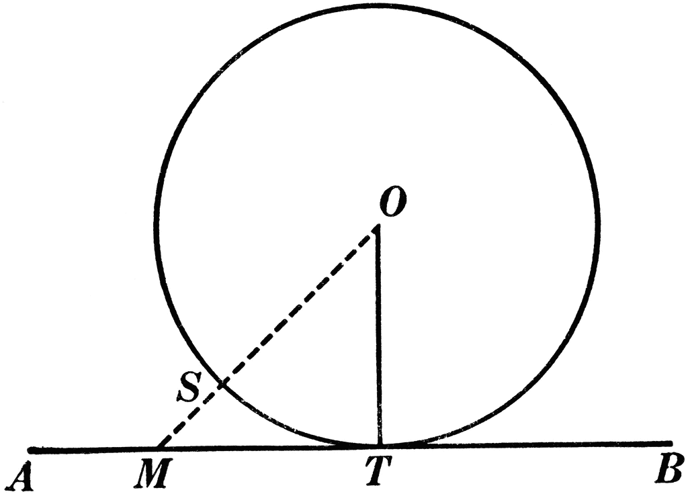
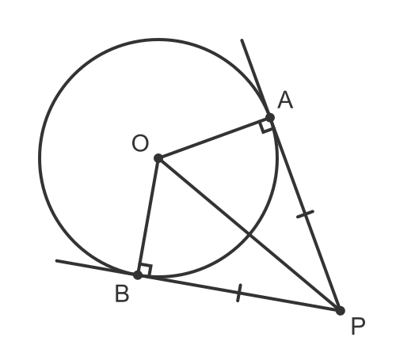
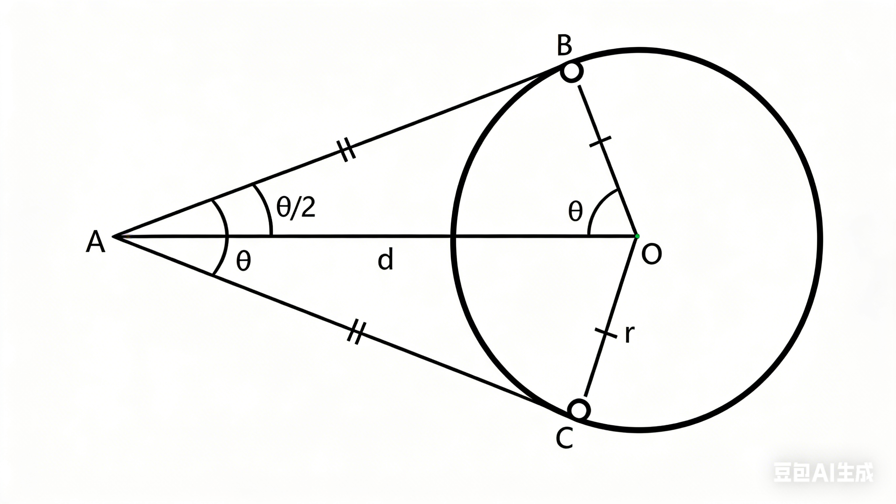
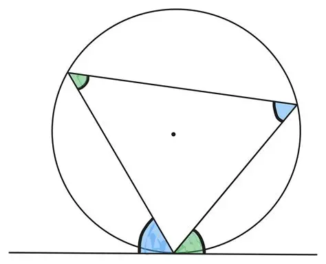

Circle Theorem 1 - Angle at the Centre

Circle Theorem 2 - Angles in a Semicircle

Circle Theorem 3 - Angles in the Same Segment

Circle Theorem 4 - Cyclic Quadrilateral

Circle Theorem 5 - Radius to a Tangent

Circle Theorem 6 - Tangents from a Point to a Circle

Circle Theorem 7 - Tangents from a Point to a Circle

Circle Theorem 8 - Alternate Segment